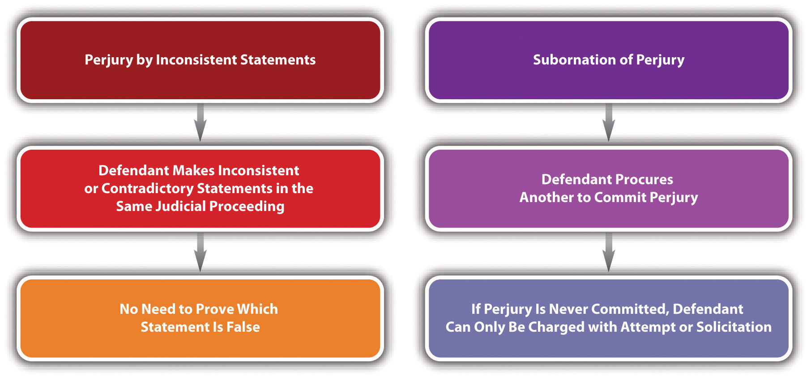

Crimes against the administration of justice impede the government’s ability to carry out the important functions of prosecuting and convicting criminals, which, in turn, destroys citizens’ confidence that the US legal system is effective in ensuring individual safety and security. This section analyzes perjury, bribery, and obstruction of justice, along with the issues commonly encountered when prosecuting these offenses. Additional statutes criminalizing contempt of court, resisting arrest, and escape are also available for review.
Witness testimony is important in a variety of settings. Juries depend on witness testimony to reach a fair and impartial verdict in civil and criminal trials, and grand juries depend on witness testimony to indict defendants for criminal conduct. Thus modern laws of perjuryA false material statement made under oath in a judicial or official proceeding or in a certified writing with awareness of the falsity of the statement or the specific intent to deceive. are calculated to ensure that witnesses testify truthfully so that justice can be done in each individual case.
In the Middle Ages, the witnesses were the jurors, so the criminalization of false witness testimony did not occur until the sixteenth century when the idea of a trial by an impartial jury emerged. The first common-law prohibition against witness perjury criminalized false testimony, given under oath, in a judicial proceeding, about a material issue. This definition was also incorporated into early American common law.“Perjury—Perjury at Common Law,” Jrank.org website, accessed May 5, 2011, http://law.jrank.org/pages/1632/Perjury-Perjury-at-common-law.html.
In modern times, every state prohibits perjury, as well as the federal government.18 U.S.C. § 1621, accessed May 5, 2011, http://www.law.cornell.edu/uscode/718/usc_sec_18_00001621----000-.html. Most state statutes or state common law, in states that allow common-law crimes, define perjury as a false material statement (criminal act), made with the specific intent or purposely to deceive, or the general intent or knowingly that the statement was false, in a judicial or official proceeding (attendant circumstance), under oath (attendant circumstance).Ga. Code tit. 16 § 16-10-70, accessed May 5, 2011, http://law.onecle.com/georgia/16/16-10-70.html. The Model Penal Code defines perjury as a false material statement, that the defendant does not believe to be true, made under oath in any official proceeding (Model Penal Code § 241.1(1)). The biggest issues commonly encountered in any perjury prosecution are proving the validity of the oath, the defendant’s criminal intent, the materiality of the false statement, and any requirement of corroborative evidence.
The defendant must be under oath when making the statement at issue in any perjury prosecution, and the oath must be administered by someone of legal authority or someone authorized to take evidence under oath,Connecticut Jury Instructions § 53a-156, accessed May 5, 2011, http://www.jud.ct.gov/ji/criminal/part4/4.5-9.htm. including a referee, hearing examiner, commissioner, notary, or other person authorized to take evidence in connection with an official or judicial proceeding.Connecticut Jury Instructions § 53a-156, accessed May 5, 2011, http://www.jud.ct.gov/ji/criminal/part4/4.5-9.htm. Federally and in many jurisdictions, the false statement can be written, as long as it is certified, such as a signature on an income tax return18 U.S.C. § 6065, accessed May 5, 2011, http://www.law.cornell.edu/uscode/26/usc_sec_26_00006065----000-.html. or a report.Cal. Penal Code § 129, accessed May 5, 2011, http://law.onecle.com/california/penal/129.html. The Model Penal Code also considers a false written statement perjury, as long as the document containing the statement is made upon oath or affirmation (Model Penal Code § 241.1(3)). In spite of the attendant circumstance requirement that the statement be made under oath, many jurisdictions disallow a defense to a prosecution for perjury based on the assertion that the oath or affirmation was administered or taken in an irregular manner.Ala. Code § 13A-10-108, accessed May 5, 2011, http://law.onecle.com/alabama/criminal-code/13A-10-108.html. The Model Penal Code has a similar provision (Model Penal Code § 241.1(3)). In addition, many jurisdictions have a provision that witnesses who refuse to take an oath shall have the option of making a nonreligous affirmation that has the same legal effect as the oath.42 Pa. Cons. Stat. Ann. § 5901, accessed May 5, 2011, http://law.onecle.com/pennsylvania/judiciary-and-judicial-procedure/00.059.001.000.html. The Model Penal Code allows for an “oath or equivalent affirmation” (Model Penal Code § 241.1(1)).
As stated previously, in many jurisdictions, the defendant must know that a statement is false or must make the statement with the specific intent or purposely to deceive. When the intent requirement is general intent or knowledge that the statement is false, proof that the statement is false could give rise to an inference of intent.State v. Kimber, 48 Conn. App. 234 (1998), accessed May 5, 2011, http://scholar.google.com/scholar_case?case=17399056576949304157&q= State+v.+Kimber+48&hl=en&as_sdt=2,5.
Perjury generally requires a false statement that is material, which means that it substantially affected or could substantially affect the outcome of the proceeding.Mo. Ann. Stat. § 575.040, accessed May 5, 2011, http://www1.law.umkc.edu/suni/CrimLaw/calendar/Class_4_Mo_perjury.htm. In many jurisdictions and federally, materiality is a question of fact for the trier of fact, which could be a jury.U.S. v. Gaudin, 515 U.S. 506 (1995), accessed May 5, 2011, http://scholar.google.com/scholar_case?case=12281686524757008977&hl=en&as_sdt=2&as_vis=1&oi=scholarr. The Model Penal Code defines materiality as a statement that could have affected the course or outcome of the proceeding and declares that materiality should be a question of law, which means it should be determined by a judge, not a jury (Model Penal Code § 241.1(2)). Typically, it is not a defense to perjury that the defendant did not know that the statement was material.Mo. Ann. Stat. § 575.040(3) (1), accessed May 5, 2011, http://www1.law.umkc.edu/suni/CrimLaw/calendar/Class_4_Mo_perjury.htm. The Model Penal Code has a similar provision (Model Penal Code § 241.1(2)).
Some jurisdictions have a requirement of corroborative evidence for perjury, which necessitates the testimony of two witnesses to support a conviction, similar to a treason conviction.Tex. Code of Criminal Procedure, § 38.18, accessed May 5, 2011, http://law.onecle.com/texas/criminal-procedure/38.18.00.html. The Model Penal Code also has this corroborative evidence requirement (Model Penal Code § 241.1(6)).
Many jurisdictions provide a defense to perjury if the defendant retracts his or her false statement in the course of the same proceeding in which it was made before it becomes manifest that the falsification will be exposed.Ala. Code § 13A-10-107, accessed May 6, 2011, http://law.onecle.com/alabama/criminal-code/13A-10-107.html. The Model Penal Code has a similar provision (Model Penal Code § 241.1(4)).
Marcus is a witness in a civil suit for damages against Lindsay. Macy’s department store is suing Lindsay for the alleged theft of a diamond necklace. Marcus takes an oath sworn by the court commissioner. He thereafter testifies that he saw Lindsay try on the necklace and then walk out of the store without paying for it. When the Macy’s attorney asks Marcus what he was doing at Macy’s, Marcus responds that he was buying some jewelry as a gift for his wife. In actuality, Marcus was shopping for jewelry as a gift for his girlfriend. Marcus has probably not committed perjury in this case. Marcus is testifying as a witness in a civil rather than criminal trial, but this satisfies the perjury requirement that the testimony be offered during a judicial or official proceeding. Before testifying, Marcus took an oath that was administered by a court commissioner, also satisfying the perjury requirement that the defendant take an oath administered by someone with the legal authority or authorization to take evidence under oath. Marcus’s statement is false, and he made the statement with knowledge of its falsity, which satisfies the perjury criminal intent requirement. However, Marcus’s statement does not appear to be material to this judicial proceeding because the reason for Marcus’s presence at Macy’s will not affect the outcome of Lindsay’s civil theft trial (usually called the tort of conversion). Thus Marcus is probably not subject to prosecution for and conviction of perjury, based on his testimony in this case.
Review the example in Section 13 "Example of a Case Lacking an Element of Perjury" with Marcus. Change this example so that Marcus testifies that he did not see Lindsay walk out of the Macy’s department store without paying for the necklace because he does not want to admit that he was shopping for jewelry to buy his girlfriend. Anthony, the Macy’s civil trial attorney, cross-examines Marcus, and forces him to admit that he saw Lindsay steal the necklace, and that he was lying previously. Marcus has most likely committed perjury in this example. Marcus made a false statement, under a validly administered oath, in a judicial proceeding, with knowledge of its falsity. Marcus’s statement was material because, if believed, it would have helped exonerate Lindsay in her civil case. In many jurisdictions, the trier of fact, which could be a judge or jury, determines whether or not the statement is material. Marcus’s admission that he was lying is not a retraction that could serve as a defense because it was not made until the lie was about to be exposed. Thus all the elements of perjury appear to be present, and Marcus may be subject to prosecution for and conviction of this offense.
Figure 13.6 Diagram of Defenses to Perjury

Some jurisdictions criminalize perjury by inconsistent or contradictory statementsThe defendant makes inconsistent statements under oath in a judicial or official proceeding., which is slightly different from criminal perjury.Ala. Code § 13A-10-104, accessed May 6, 2011, http://law.onecle.com/alabama/criminal-code/13A-10-104.html. Perjury by inconsistent statements is easier to prove than traditional perjury because the prosecution can simply offer evidence that the defendant made statements that are inconsistent, in a judicial proceeding, after taking a validly administered oath. Corroborative evidence is not required, and the prosecution does not have the burden of proving that one of the statements is false, just that one or the other was false and not believed by the defendant to be true.Ala. Code § 13A-10-104, accessed May 6, 2011, http://law.onecle.com/alabama/criminal-code/13A-10-104.html. The Model Penal Code has a similar provision (Model Penal Code § 241.1(5)).
Review the example with Marcus in Section 13 "Example of Perjury". If Marcus’s jurisdiction criminalizes perjury by inconsistent statements, Marcus could most likely be prosecuted for this offense. Marcus made two inconsistent statements while under a validly administered oath in Lindsay’s conversion trial, which is a judicial proceeding. In Marcus’s criminal perjury by inconsistent statements prosecution, the prosecutor need only offer evidence of the inconsistent statements to the trier of fact. The prosecutor does not have to provide corroborative evidence and does not have the burden of proving that the first statement was false, which will simplify and expedite the trial and may subject Marcus to conviction of this offense.
Most jurisdictions criminalize subornation of perjuryProcuring another to commit perjury., which is typically procuring another to commit perjury (criminal act) with specific intent or purposely, or general intent or knowingly, and factually and legally causing the resulting harm that perjury is in fact committed.N.C. Gen. Stat. § 14-210, accessed May 6, 2011, http://law.onecle.com/north-carolina/14-criminal-law/14-210.html.
Review the example given with Marcus in Section 13 "Example of Perjury". Add to this example and assume that Marcus begs Janelle, another witness in Lindsay’s conversion trial, to say that she did not see him at Macy’s the day Lindsay stole the necklace. Janelle flatly refuses. Marcus has not committed subornation of perjury in this case. Although Marcus tried to procure Janelle to commit perjury, with specific intent or purposely, Janelle did not cooperate and did not commit the perjury. Thus the harm element of subornation of perjury is lacking, and Marcus can be prosecuted only for attempted subornation of perjury or solicitation to commit perjury, rather than the completed offense.
Figure 13.7 Comparison of Perjury by Inconsistent Statements and Subornation of Perjury
Perjury is generally graded as a felony,N.C. Gen. Stat. § 14-209, accessed May 6, 2011, http://law.onecle.com/north-carolina/14-criminal-law/14-209.html. with a potential sentencing enhancement for committing perjury that causes another to be sentenced to prison or the death penalty.Ga. Code tit. 16, § 16-10-70, accessed May 6, 2011, http://law.onecle.com/georgia/16/16-10-70.html. The Model Penal Code grades perjury as a felony of the third degree (Model Penal Code § 241.1(1)). Subornation of perjury is also graded as a felony.N.C. Gen. Stat. § 14-210, accessed May 6, 2011, http://law.onecle.com/north-carolina/14-criminal-law/14-210.html. However, because of the procedural difficulties in successfully convicting a defendant of perjury and subornation of perjury, these crimes are not often prosecuted. Nonetheless, the threat of a felony conviction still serves as a deterrent and helps to ensure that witnesses testify truthfully in judicial and official proceedings and give accurate statements in certified writings.
BriberyOffering, conferring, agreeing to confer, or soliciting, accepting, or agreeing to accept a benefit to or from a designated individual for the purpose of influencing decision making. is often compared to extortion, yet extortion is considered a crime of threatened force or violence, while bribery involves financial inducement.U.S. v. Adcock, 558 F.2d 397 (1977), accessed May 6, 2011, http://scholar.google.com/scholar_case?case=189694239263939940&hl=en&as_sdt=2&as_vis=1&oi=scholarr. At early common law, bribery was the receiving or offering any undue reward by or to any person in a public office in order to influence his or her behavior in office and induce him or her to act contrary to the known rules of honesty and integrity.Legal definition of bribery, Duhaime.org website, accessed May 6, 2011, http://www.duhaime.org/LegalDictionary/B/Bribery.aspx. In modern times, many criminal statutes define bribery as conferring, offering, agreeing to confer, or soliciting, accepting, or agreeing to accept any benefit upon a public official (criminal act) with the specific intent or purposely or the general intent or knowingly to form an agreement or understanding that the public official’s vote, opinion, judgment, action, decision, or exercise of discretion will be influenced by the benefit.N.Y. Penal Law § 200.00, accessed May 6, 2011, http://law.onecle.com/new-york/penal/PEN0200.00_200.00.html; N.Y. Penal Law § 200.10, http://law.onecle.com/new-york/penal/PEN0200.10_200.10.html. The crime of bribery is often extended to apply to persons other than public officials, such as employees, agents, or fiduciaries for the purpose of influencing the bribed individual’s on-the-job conduct.N.Y. Penal Law § 180.00, accessed May 6, 2011, http://law.onecle.com/new-york/penal/PEN0180.00_180.00.html. This type of bribery is typically called commercial briberyBribery of an employee for the purpose of influencing on-the-job conduct..N.Y. Penal Law § 180.00, accessed May 6, 2011, http://law.onecle.com/new-york/penal/PEN0180.00_180.00.html. Bribery can also cover members of a state legislature,Cal. Penal Code § 85, accessed May 6, 2011, http://law.onecle.com/california/penal/85.html; Cal. Penal Code § 86, http://law.onecle.com/california/penal/86.html. any judicial officer, juror, referee, umpire,Cal. Penal Code § 92, accessed May 6, 2011, http://law.onecle.com/california/penal/92.html; Cal. Penal Code § 93, http://law.onecle.com/california/penal/93.html. or witnessOr. Rev. Stat. § 162.265, accessed May 6, 2011, http://law.onecle.com/oregon/162-offenses-against-the-state-and/162.265.html; Or. Rev. Stat. §162.275, accessed May 7, 2011, http://law.onecle.com/oregon/162-offenses-against-the-state-and/162.275.html. when a bribe is conferred or offered, asked for, received, or agreed to be received to influence their vote or decision. The Model Penal Code criminalizes as bribery the act of conferring, offering, agreeing to confer, soliciting, accepting, or agreeing to accept any pecuniaryMonetary. (which means monetary) benefit in exchange for a public servant, party official, voter’s decision, opinion, recommendation, vote, or other exercise of discretion (Model Penal Code § 240.1(1)). The Model Penal Code also criminalizes as bribery the act of conferring, offering, agreeing to confer, soliciting, accepting, or agreeing to accept any benefit in exchange for a judicial or administrative officer’s decision, vote, recommendation, or other exercise of official discretion (Model Penal Code § 240.1(2)).
Similar to perjury, bribery is notoriously difficult to prove, which is a factor prosecutors must consider when deciding whether or not to charge an individual(s) with this offense. The most difficult bribery element to prove beyond a reasonable doubt is the criminal intent element of specific intent or purposely or general intent or knowingly to enter into an agreement that influences the bribed individual’s decision.
Isabel, a defendant on trial for perjury, notices the judge presiding in her case shopping at Macy’s department store. Isabel thereafter buys an expensive watch, has it wrapped, walks up to the judge, and offers it to him as a gift. Isabel has most likely committed bribery in this case. Although the judge did not accept Isabel’s “gift,” most states criminalize as bribery the offer of any benefit, so the act of bribery is complete when Isabel proffers the watch. In addition, based on these facts, Isabel’s connection to the judge is only through her perjury prosecution, so her act appears calculated to influence his decision in that case, especially because the watch is expensive and not merely a token. Note that a prosecutor is required to prove beyond a reasonable doubt Isabel’s specific intent or purposely or general intent or knowingly to enter into an agreement with the judge influencing his decision, which is challenging even under the obvious circumstances apparent in this case.
Review the example with Isabel in Section 13 "Example of Bribery". Add to this example and assume that the judge graciously accepts Isabel’s gift and thereafter rules in her favor, acquitting her of perjury. In this example, both the judge and Isabel have likely committed bribery because most states criminalize the conferring, offering, and accepting and receiving a bribe as the criminal act elements. Thus both Isabel and the judge may be subject to prosecution for and conviction of this offense, and the judge’s acquittal of Isabel will ease the prosecutor’s burden in proving the specific intent or purposely or general intent or knowingly to enter into an agreement corruptly influencing the decision making in this case.
Isabel notices a gentleman struggling to pay his bill at a local coffee shop. Isabel steps up and charitably offers to pay the gentleman’s bill. Later in the day, while watching her son’s professional baseball game, Isabel notices that the umpire looks familiar. After pondering it for a few minutes, she realizes that he is the same gentleman who could not pay his bill at the coffee shop. Isabel and the umpire probably have not committed bribery in this case. Although Isabel gave the umpire money, and he was the decision maker in her son’s baseball game, Isabel did not give the money, nor did the umpire accept it, with the specific intent or purposely or general intent or knowingly to enter into an agreement influencing the umpire’s decisions. Thus the criminal intent element for bribery appears to be lacking, and neither Isabel nor the umpire are subject to prosecution for and conviction of this offense.
In many states and under the Model Penal Code, it is no defense to bribery that the individual bribed does not have the authority to act or make the decision that is the subject of the bribe (Model Penal Code § 240.1).Ala. Code § 13A-10-61, accessed May 7, 2011, http://law.onecle.com/alabama/criminal-code/13A-10-61.html.
Review the example with Isabel and the judge in Section 13 "Another Example of Bribery". Change this example and assume that the “judge” in question is an imposter who is merely masquerading as a judge to live out a lifelong fantasy. Isabel and the “judge” may still be prosecuted for and convicted of bribery in many jurisdictions and under the Model Penal Code because lack of authority is typically not a defense to bribery under modern statutes criminalizing this offense.
Figure 13.8 Diagram of Defenses to Bribery

Bribery is typically graded as a felonyN.Y. Penal Law § 200.00, accessed May 6, 2011, http://law.onecle.com/new-york/penal/PEN0200.00_200.00.html. with enhancements for bribery that is carried out with a larger sum of moneyN.Y. Penal Law § 200.03, accessed May 6, 2011, http://law.onecle.com/new-york/penal/PEN0200.03_200.03.html. or bribery that results in someone’s prosecution or incarceration for a felony.N.Y. Penal Law § 200.04, accessed May 6, 2011, http://law.onecle.com/new-york/penal/PEN0200.04_200.04.html. When a state legislatorCal. Penal Code § 88, accessed May 7, 2011, http://law.onecle.com/california/penal/88.html. or a public officialCal. Penal Code § 74, accessed May 7, 2011, http://law.onecle.com/california/penal/74.html. commits bribery, it is typical to disqualify that individual from his or her office for life, in addition to any other sentence.
Obstruction of justiceInterfering with the administration of justice by impeding law enforcement procedure, criminal prosecution, or conviction of criminal defendants. takes many forms and is a classic example of an offense against the administration of justice. States and the federal government exercise broad latitude in enacting statutes that criminalize interference with any aspect of law enforcement procedure or the prosecution and conviction of criminal offenders. Some typical examples of obstruction of justice are as follows: giving false identification to a law enforcement officer,720 ILCS § 5/31-4.5, accessed May 7, 2011, http://law.onecle.com/illinois/720ilcs5/31-4.5.html. impersonating a law enforcement officer,Fla. Stat. Ann. § 843.08, accessed May 7, 2011, http://law.onecle.com/florida/crimes/843.08.html. refusing to aid a law enforcement officer when requested,N.Y. Penal Law § 195.10, accessed May 7, 2011, http://law.onecle.com/new-york/penal/PEN0195.10_195.10.html. giving false evidence,720 ILCS § 5/31-4, accessed May 7, 2011, http://law.onecle.com/illinois/720ilcs5/31-4.html. hiding or concealing oneself and refusing to give evidence,720 ILCS § 5/31-4, accessed May 7, 2011, http://law.onecle.com/illinois/720ilcs5/31-4.html. tampering with evidence,Or. Rev. Stat. § 162.295, accessed May 7, 2011, http://law.onecle.com/oregon/162-offenses-against-the-state-and/162.295.html. and tampering with a witness18 U.S.C. § 1512, accessed May 7, 2011, http://www.law.cornell.edu/uscode/718/usc_sec_18_00001512----000-.html. or juror.Ariz. Rev. Stat. § 13-2807, accessed May 7, 2011, http://law.onecle.com/arizona/criminal-code/13-2807.html. All these acts are generally supported by specific intent or purposely or general intent or knowingly. The Model Penal Code prohibits threatening unlawful harm to any person or public servant with purpose to influence his decision, opinion, recommendation, vote, or other exercise of discretion (Model Penal Code § 240.2). Obstruction of justice offenses are most often graded as a misdemeanor or felony, depending on the offense.
Barry Bonds, a baseball player and record-breaking home run hitter for the San Francisco Giants, was found guilty by a federal jury for obstruction of justice, based on his refusal to answer a question during a grand jury investigation of his steroid use.Juliet Macur, “Bonds Guilty of Obstruction, but Not of Perjury,” New York Times website, accessed May 8, 2011, http://www.nytimes.com/2011/04/14/sports/baseball/14bonds.html?pagewanted=1&_r=1. Bonds was also charged with three counts of perjury, but the jury could not agree to convict, resulting in a mistrial on all three counts.Jorge L. Ortiz, “Verdict in: Bonds Found Guilty, but Case Not Closed Yet,” USA TODAY website, accessed May 8, 2011, http://www.usatoday.com/sports/baseball/2011-04-13-verdict-barry-bonds-guilty_N.htm. The perjury charges stemmed from Bonds’s claim while testifying under oath that he never knowingly used steroids, never knowingly used human growth hormones, and was never injected with a substance by anyone other than his trainer. The obstruction of justice conviction resulted from Bonds’s evasive answer to the question of whether his personal trainer had ever injected him with steroids.Juliet Macur, “Bonds Guilty of Obstruction, but Not of Perjury,” New York Times website, accessed May 8, 2011, http://www.nytimes.com/2011/04/14/sports/baseball/14bonds.html?pagewanted=1&_r=1. Instead of answering yes or no to this question, Bonds began reminiscing about his friendship with the trainer, who went to prison four times in five years for also refusing to testify in the investigation.Juliet Macur, “Bonds Guilty of Obstruction, but Not of Perjury,” New York Times website, accessed May 8, 2011, http://www.nytimes.com/2011/04/14/sports/baseball/14bonds.html?pagewanted=1&_r=1. The perjury charges support the obstruction of justice charge, so the defense asked for a court dismissal of the obstruction of justice conviction in order to clear the way for an appeal.Jorge L. Ortiz, “Verdict in: Bonds Found Guilty, but Case Not Closed Yet,” USA TODAY website, accessed May 8, 2011, http://www.usatoday.com/sports/baseball/2011-04-13-verdict-barry-bonds-guilty_N.htm. Note that Bonds’s obstruction of justice charge of evading the question and refusing to give evidence appears easier to prove than the perjury charges, which have a daunting criminal intent requirement, as discussed in Section 13 "Perjury Criminal Intent".
Associated Press: Bonds Guilty of Obstruction, Jury Hung on Others
The verdict in the federal Barry Bonds case is explained in this video:
Additional crimes against the government that impair the orderly administration of justice are contempt,N.C. Gen. Stat. § 5A-11, et seq., accessed May 8, 2011, http://law.onecle.com/north-carolina/5a-contempt/index.html. resisting arrest,18 Pa. Cons. Stat. Ann. § 5104, accessed May 8, 2011, http://law.onecle.com/pennsylvania/crimes-and-offenses/00.051.004.000.html. and escape.Tex. Penal Code § 38.06, accessed May 8, 2011, http://law.onecle.com/texas/penal/38.06.00.html. Review the statutes in the endnotes for common elements and grading of these offenses.
Figure 13.9 Diagram of Perjury, Bribery, and Obstruction of Justice

Answer the following questions. Check your answers using the answer key at the end of the chapter.
Should Former President Clinton Have Been Criminally Prosecuted for Perjury and Obstruction of Justice?
On May 6, 1994, Paula Jones filed a civil lawsuit for sexual harassment against then-president Bill Clinton. The US Supreme Court ruled that the president was not immune to this lawsuit, allowing it to continue.Clinton v. Jones, 520 U.S. 681 (1997), accessed May 9, 2011, http://www.law.cornell.edu/supct/html/95-1853.ZS.html. An investigation pursuant to the Jones lawsuit revealed that the president was currently having an affair with a White House intern, Monica Lewinsky.“Presidential Impeachment Proceedings,” Historyplace.com website, accessed May 9, 2011, http://www.historyplace.com/unitedstates/impeachments/clinton.htm. During a Jones lawsuit deposition, the president stated under oath that he did not have sexual relations with Ms. Lewinsky pursuant to the definition of sexual relations given by the questioning attorneys.Deposition excerpts, Jones v. Clinton deposition, Historyplace.com website, accessed May 9, 2011, http://www.historyplace.com/unitedstates/impeachments/jones-deposition.htm. He also stated that he could not recall ever being alone with Lewinsky at the White House.Deposition excerpts, Jones v. Clinton deposition, Historyplace.com website, accessed May 9, 2011, http://www.historyplace.com/unitedstates/impeachments/jones-deposition.htm. After the deposition, he was involved in an effort to get Ms. Lewinsky a federal job outside Washington, DC.“Presidential Impeachment Proceedings,” Historyplace.com website, accessed May 9, 2011, http://www.historyplace.com/unitedstates/impeachments/clinton.htm. Although the Jones lawsuit was dismissed, the president was evasive when asked questions regarding the Lewinsky affair during a grand jury investigation instigated by Prosecutor and former Solicitor General Kenneth Starr. The evening of the grand jury investigation, the president appeared on national TV and admitted, “Indeed, I did have a relationship with Ms. Lewinsky that was not appropriate. In fact, it was wrong. It constituted a critical lapse in judgment and a personal failure on my part for which I am solely and completely responsible.”“Presidential Impeachment Proceedings,” Historyplace.com website, accessed May 9, 2011, http://www.historyplace.com/unitedstates/impeachments/clinton.htm. The House of Representatives later impeached Clinton for perjury and obstruction of justice, based on the statements he made at the grand jury investigation and his conduct during the Jones deposition. After a trial in the Senate, he was acquitted of both counts and thereafter served out his term as president.“Presidential Impeachment Proceedings,” Historyplace.com website, accessed May 9, 2011, http://www.historyplace.com/unitedstates/impeachments/clinton.htm. He was never criminally prosecuted for perjury or obstruction of justice outside the impeachment procedure, although he was later disbarred for his behavior.Ann Gearan, “Clinton Disbarred by Supreme Court,” Famguardian.org website, accessed May 9, 2011, http://famguardian.org/Subjects/LawAndGovt/News/ClintonDisbar-011001.htm.
Check your answer using the answer key at the end of the chapter.
Clinton: “I did not have sexual relations with that woman…”
In this video, President Clinton denies that he had sexual relations with Monica Lewinsky:
President Clinton Apologizes to the Nation
In this video, President Clinton admits that he had an inappropriate relationship with Monica Lewinsky: